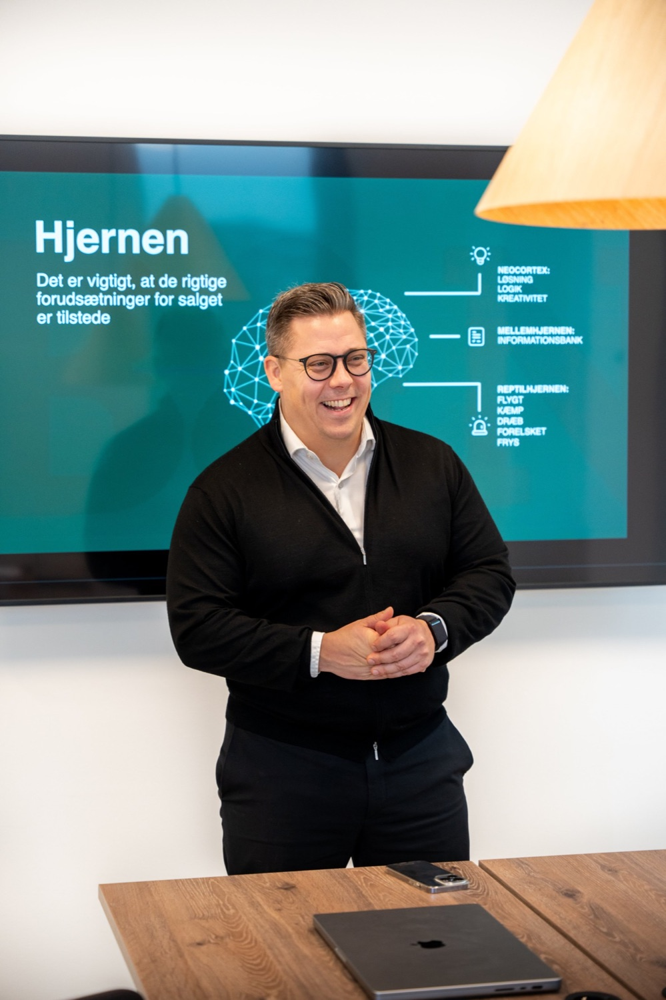
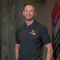

Jeg underviser i beslutningspsykologi
Jeg hjælper sælgere, rådgivere og ledere med at forstå, hvordan kunder træffer beslutninger. Så de sælger til flere kunder, uden at presse nogen.
- 28.000+følgere på LinkedIn
- 251anbefalinger på LinkedIn
- 4,6på Trustpilot
- 600+virksomheder trænet

Jeg har trænet hold hos


“Rettidig omhu i salg er at holde mund og lytte efter, hvad kunden siger. Og kun sælge noget, hvis du ved, at du kan hjælpe kunden.”

Jeg har selv siddet i sælgerens stol
Jeg startede som sælger hos Orange. Jeg har lavet op til 100 salgsopkald om dagen og holdt mere end 1.000 salgsmøder. Siden blev jeg Head of Sales og startede Birk & Neo i 2017.
I dag har jeg arbejdet med salg i over 20 år og trænet hold i mere end 600 virksomheder.
Læs om mig →
Sådan arbejder jeg
- IPraksis frem for teori
De fleste salgskurser varer 1 til 3 dage og giver teori og modeller. Jeg træner det, der sker i jeres egne samtaler, og hvordan det bliver sagt.
- IIForankring over tid
Vaner, der er bygget over mange år, ændrer sig ikke på et kursus. Derfor følger jeg op over måneder, til det sidder.
- IIIPsykologisk tryghed
Teknikker, der får kunden til at tale og uddybe. Når kunden føler sig set, hørt og forstået, køber kunden af sig selv.
Det har de opnået
Resultater, som medlemmer af Neurosalg selv har fortalt om.
- 3x
flere nye SaaS B2B-kunder, og topsælger i virksomheden inden for 1,5 år.
Jonas MenkeAccount Executive, Mercell - 85.000 kr.
solgt på 1 opkald, som ingen havde kunnet lukke i 2 år.
Bjarne WeberSalgschef, Granzow A/S - 100.000 kr.
i omsætning om ugen og den bedste lukkeprocent.
Oliver ZiersenForsikringsrådgiver, GF Forsikring - Årsmålet
nået allerede i september.
Søren ØglendErhvervsassurandør, If
“Jeg har arbejdet i mere end 20 år i salgsbranchen og mødt rigtig mange salgstrænere, men aldrig en som Lasse Birk.”
Allan Damborg · Group CEO, Generaxion
Hvad ledere siger om mig
251 har anbefalet mig på LinkedIn. Her er 6 af dem.
Lasse er en enestående, dygtig og passioneret salgstræner. Han går nye veje og har sit helt eget DNA.
Sjældent har jeg oplevet salgstræning blive så konkret, og jeg kan kun anbefale Lasse.
Vi havde ikke været, hvor vi er i dag, uden Lasses træning.
Hans træningssessioner giver masser af inspiration og konkrete værktøjer, som sælgerne kan gå direkte ud og benytte.

Stefan Bjørn EgelundSales Development Manager, Fieldwire by HiltiHans evne til at inddrage både teoretiske og praktiske metoder på en så engageret måde åbner bestemt for nogle nye perspektiver.
Dejligt med en instruktør, som ikke kun er teoretisk, men også viser, hvordan man gør det.

“Prøv forskellige salgstrænere, og find ud af, hvem du arbejder bedst sammen med. Jeg har selv købt salgstræning af rigtig mange, fordi jeg vil lære af alle.”
Virksomhederne kommer igen
- Sydbank
En pilot med 15 rådgivere og 15 Private Banking-folk mod et andet konsulenthus. Efter 6 måneder: flere nye kunder, højere kundetilfredshed og gladere medarbejdere. Derefter hele område Sønderjylland.
- Boehringer Ingelheim
Startede i Human Health. Efter 3 måneder kom Animal Health med og siden Norge.
- Generaxion
Et kursus for ca. 40 sælgere og 15 mødebookere. Derefter 6 ekstra kursusdage.


2 måder at arbejde med mig
For dig selv
Neurosalg er min online salgstræning til dig, der vil blive bedre på egen hånd. Masterclass, community og live-træning med mig hver mandag.
9.200 kr.ekskl. moms · engangsbetaling · livstidsadgang
Se Neurosalg → Fysisk salgstræningFor jeres salgsteam
1 til 3 dages træning med mig og derefter opfølgning i jeres egne møder over 3, 6 eller 12 måneder. Det første møde tager jeg selv.
47.000 kr.ekskl. moms pr. træningsdag
Se forløbet →